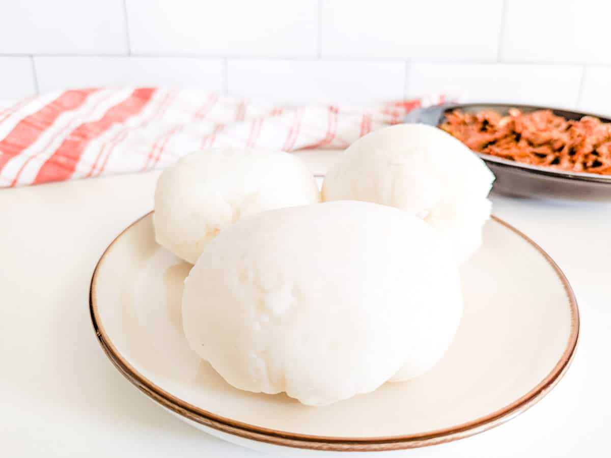
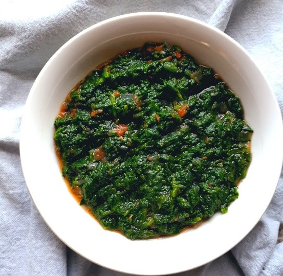
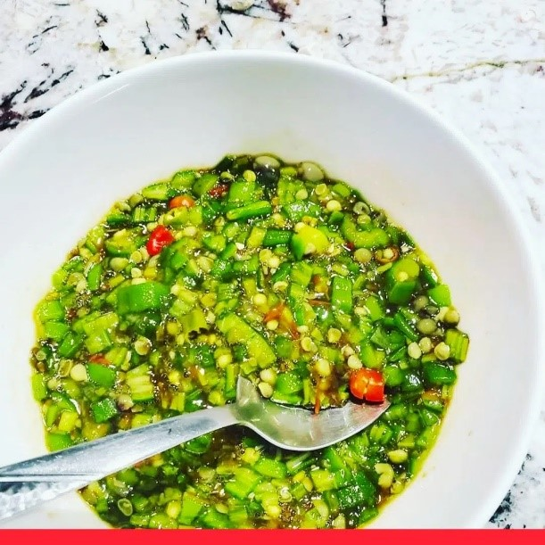
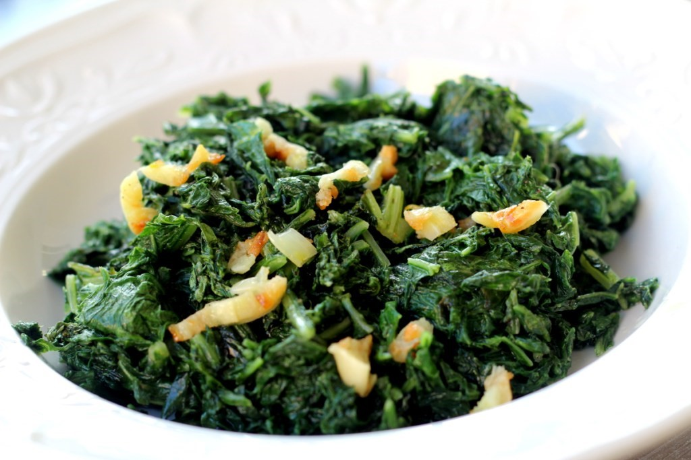

Share |


Print
Sadza Ingridients
- 1 cup maize meal (also known as maize flour, mealie meal or cornmeal)
- 1½ cups cold/room temperature water
- 2 cups hot water

Preparation
- Add ½ cup maize meal to a bowl. Mix it with 1½ cups of cold / room temperature water, to form a smooth, runny paste.
- Transfer the contents from the bowl to a small pot and set it on the stove at high heat. Keep stirring until it starts boiling. Next, slowly add the hot water, stirring continuously to prevent the sadza from forming lumps.
- Keep stirring until it starts to bubble. Cautiously cover the pot, reduce the heat to a medium-low, and allow it to simmer for 10 minutes. The consistency should resemble porridge at this point. If it is too thin, simply make a little slurry in a small cup, comprising a few tablespoons of maize meal and hot water, similar to the first step above, and stir it in. If too thick then add some more hot water.
- Stir in the maize meal, a little at a time, making sure it is well mixed in, before adding some more. This helps prevent lumps. The sadza will continue thickening as it cooks.
- Continue stirring, for about 5 minutes. This is very important as it helps give the sadza a smooth texture. Cover, and allow it to cook on low for a further 15 minutes. Once this time is over, uncover the pot and stir again for 1-2 minutes.
- 6. Once cooked, use your wooden spoon to gather the sadza into one mass. Use your wooden spoon to form it into round balls, on a plate. Shape as preferred, and serve it hot, with some beef stew, kapenta, or your favourite relish
Muboora
Ingridients
- 15- 20 pumpkin leaves chopped fine
- salt
- 1/4 tsp baking soda/ or ash from completey burnt firewood to saute together
- 1 small onion chopped
- 1 small Tomato chopped
- 1 small green chilli
- 2-3 cloves garlic
- salt to taste
Method
- Wash and prep the pumpkin leaves
- Finely chop the leaves
- Bring 4 cups of water to a boil
- Add the salt and baking soda. Then add the pumpkin leaves to blanch
- Once the leaves turn dark vibrant green, extract them out of the water
- Drain and keep aside.
Derere
Ingridients
- 300g derere (okra)
- 1/2 tsp bicarbonate of soda/ or ash from completely burnt firewood
- 1/2 cup fresh tomatoes
- 1 medium spring onion
- 3/4 cup Water
- 1/2 tsp Salt
- 1 small finger chilli (optional)
- 1/2 ground black pepper
Method
- In a medium-sized saucepan, bring the water to a boil and add the soda – it should foam up as you add it to the water
- Add the chopped okra and whisk or beat with a wooden spoon for 3 mins
- Add the spring onions, tomatoes, chilies, pepper, and salt and continue whisking.
- Cook for a further 3-5 mins whisking constantly
- Put aside to cool down and serve with sadza.
- If you do not like spicy food, leave out the finger chilies as they are very hot.
- Serve with sadza and a garnish if you choose
Tsunga
Ingridients
- 2 tablespoons vegetable oil
- 2 cloves garlic smashed
- 2 bunches mustard greens stemmed and chopped
- Kosher salt and freshly ground black pepper
Instructions
- In a large pan with straight sides on medium heat add the oil. Add the garlic to the hot oil. Saute until garlic is softened and fragrant and has infused the oil.
- Add the mustard greens. Season the greens with salt, and pepper, and saute while tossing to wilt. Once wilted add the chicken stock and stir. Raise heat to a simmer, then lower and cook for about 5 minutes more.